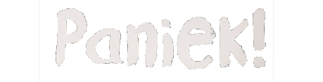

Paniek! is een invoelbare verfilming van de ervaringen van mensen die last hebben gehad van een paniekaanval. Een paniekaanval is een vaak onbegrepen fenomeen. Als je nooit paniek of extreme angst hebt meegemaakt kun je je moeilijk inleven. De angst voelt en is echt, maar fysiek is er niks aan de hand. Zelf heb ik er ook een tijdje mee geworsteld, ik merkte dat het ook bijna niet uit te leggen is wat er gebeurt op zo’n moment. Toen ik erover ging praten met anderen die er last van hebben gehad, hielp het voor mij om het beter te begrijpen. Sommigen lopen er ook te lang mee rond zonder te weten wat er mis is. Met deze documentaire wil ik paniekaanvallen beter bespreekbaar maken. Juist door niet in te gaan op de theorie, maar de subjectieve ervaring van mensen die hier last van hebben gehad. Je volgt de paniekaanval van vier mensen van verschillende leeftijden, visueel en sonisch wordt je meegenomen in hun situatie.
Regie en camera: Timon Drost
Camera en licht: Gayle van der Burgh
Geluidsontwerp: Daan Ploegmakers
Color grading: Mees Princen
Muziek: Aidan Bouw
Grafisch ontwerp: Maxim Mulder